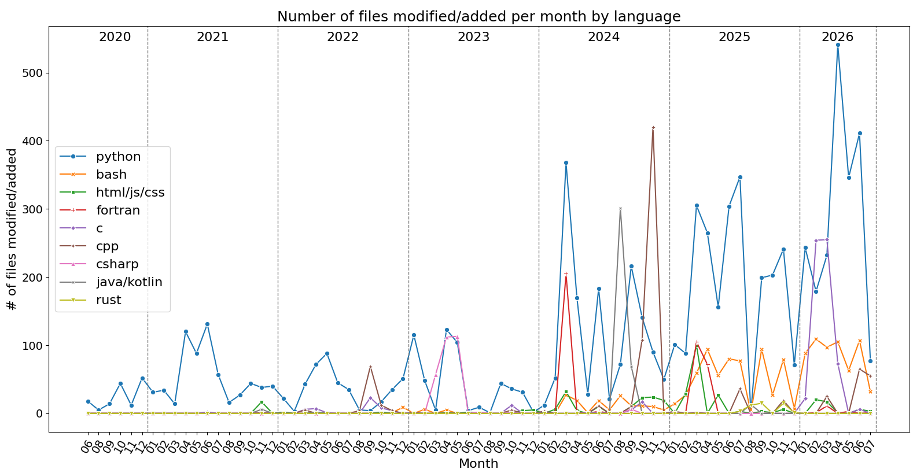

Most used programming languages
This is a rough estimate of my most used programming languages as for July 2026. It's based on the number of files modified or added per month in commits with my author name, across all my non-archived local repositories. Some old contributions might be missing, namely archived private repositories backed up in GitHub.
